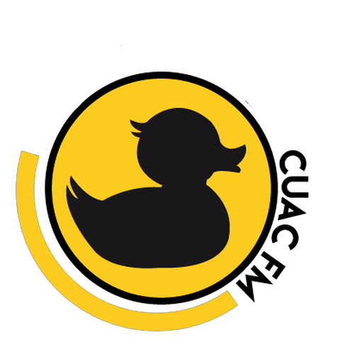

CUAC FM
Dende CUAC FM temos o enorme pesar de comunicar que o pasado día 21 de setembro, despois de 21 anos de emisión, a Xunta de Galicia, a través da súa Secretaría Xeral de Medios, comunicou a Cuac FM a incoación dun expediente sancionador por emitir “sen dispor da correspondente licenza”. CUAC exponse a unha sanción administrativa que vai dos 100.001 aos 200.000€. Desde o 1 de Octubro CUAC FM xa non emite en FM. Continuamos emitindo a través de internet.
Para seguir as novedades de CUAC FM terás que utilizar a app de Android, iOS ou no streaming oficial da nosa páxina web.